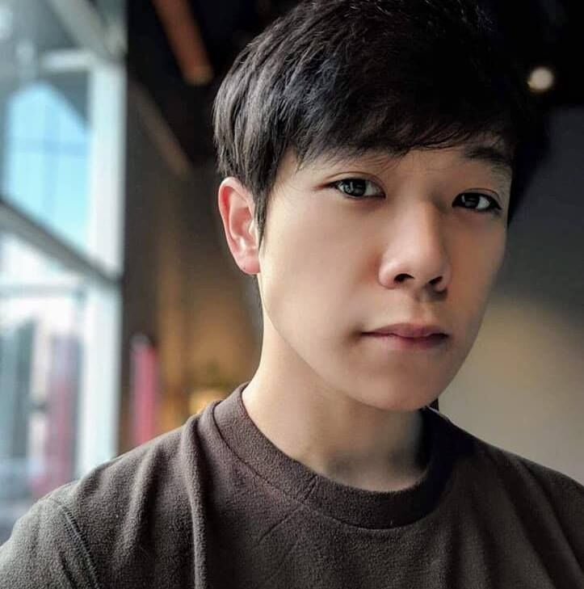
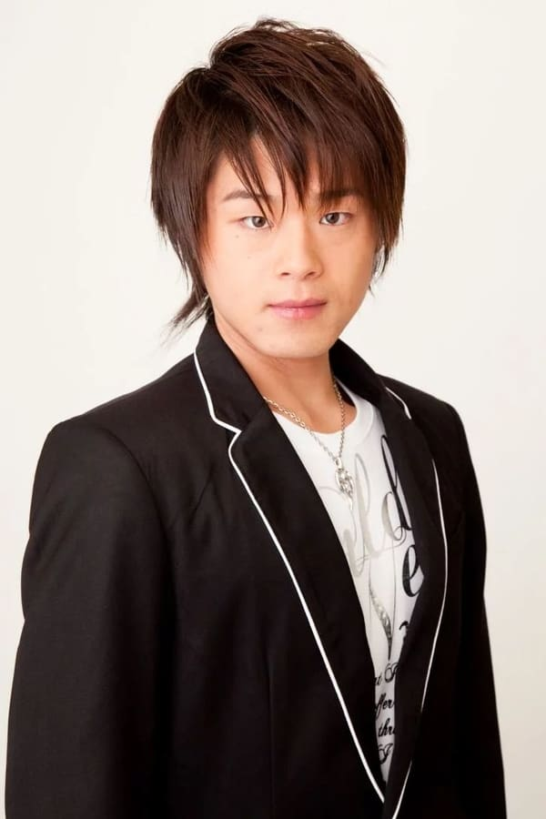

Demon slayer (Entertainment District Arc), Winter, 2021-2022

Adventure, Dark fantasy, Martial arts
Tanjiro, Inosuke, and Zenitsu accompany the Sound Hashira, Tengen, on a mission to Yoshiwara to help search for his missing wives who were investigating rumors of demons within the district.
Cast
| Actor | Character | Description |
|---|---|---|
|
 Aleks Le |

|
One of the main protagonists of Demon Slayer: Kimetsu no Yaiba and along with Inosuke Hashibira, a travelling companion of Tanjiro Kamado and Nezuko Kamado. He is also a Demon Slayer in the Demon Slayer Corps. |
|
Zach Aguilar |

|
The main protagonist of Demon Slayer: Kimetsu no Yaiba. He is a Demon Slayer in the Demon Slayer Corps, who joined to find a remedy to turn his sister, Nezuko Kamado, back into a human and to hunt down and kill demons, and later swore to defeat Muzan Kibutsuji, the Demon King, in order to prevent others from suffering the same fate as him. |
|
Abby Trott |

|
The deuteragonist of Demon Slayer: Kimetsu no Yaiba. She is a demon and the younger sister of Tanjiro Kamado and one of the two remaining members of the Kamado family. Formerly a human, she was attacked and turned into a demon by Muzan Kibutsuji. |
Sword Art Online Progressive: Aria of a Starless Night, Winter, 2022

Action, Adventure
There's no way to beat this game. The only difference is when and where you die..." One month after Kayaba Akihiko's game of death began, the death toll continues to rise, two thousand players having already lost their lives to the ultra-difficult VRMMO world of Sword Art Online. On the day of the strategy meeting to plan out the first-floor boss battle, Kirito, a solo player who vows to fight alone to get stronger, runs into a rare, high-level female player, Asuna Yuuki. She gracefully dispatches powerful monsters with a single rapier that flashes like a shooting star in the night.
Cast
| Actor | Character | Description |
|---|---|---|
 Haruka Tomatsu |

|
The main heroine of the Sword Art Online series[7], the deuteragonist of the Aincrad Arc, as well as the protagonist of the Mother's Rosario side story. She is the daughter of the former CEO of RECT Inc.. Asuna was one of the 10,000 players trapped in «Sword Art Online», where she was the sub-leader of the «Knights of the Blood» (KoB) guild. Her skills with the rapier had her earned her the nickname «The Flash» |
|
 Yoshitsugu Matsuoka |

|
Born as Narusaka Kazuto, and known as Kirito in «Sword Art Online» (SAO), «ALfheim Online» (ALO), «Gun Gale Online» (GGO), and «Project Alicization», is the protagonist of the main Sword Art Online series. |
 David W. Collins |

|
The main antagonist of the Aincrad Arc and a supporting character in the Fairy Dance Arc and Alicization Arc. He was the development director and Game Master (GM) of «Sword Art Online», as well as the designer of the «NerveGear», the Cardinal System, and «The Seed». |
Aharen-san wa Hakarenai, Spring, 2022

Romance, Drama
Reina Aharen, a small and cute student with a quiet voice, is quite bad at determining distance and personal space. Sometimes she's inches away from your face, and at other times, miles too far! The only one who tries to understand her antics is Raidou Matsuboshi, who is seated beside her in class. He has a menacing face, but in reality, he is a kind boy with an imagination that can run wild at times.Aharen-san wa Hakarenai follows the peculiar pair as their odd friendship starts to blossom when Raidou picks up Aharen's eraser for her. She misinterprets his gesture and now believes them to be best friends, showing how the simplest of things can prove to be the most complicated of challenges for them.
The Devil Is a Part-Timer! 2, soon

Comedy, Fantasy
Striking fear into the hearts of mortals, the Demon Lord Satan begins to conquer the land of Ente Isla with his vast demon armies. However, while embarking on this brutal quest to take over the continent, his efforts are foiled by the hero Emilia, forcing Satan to make his swift retreat through a dimensional portal only to land in the human world. Along with his loyal general Alsiel, the demon finds himself stranded in modern-day Tokyo and vows to return and complete his subjugation of Ente Isla—that is, if they can find a way back! Powerless in a world without magic, Satan assumes the guise of a human named Sadao Maou and begins working at MgRonald's—a local fast-food restaurant—to make ends meet. He soon realizes that his goal of conquering Ente Isla is just not enough as he grows determined to climb the corporate ladder and become the ruler of Earth, one satisfied customer at a time!
Takt Op. Destiny, 9/12ep.

Action, Adventure
In a world where aliens have invaded Earth and banned music, a group of fighter musicians use music as a weapon to maintain a resistance.
Scarlet Nexus, 22/26 ep.
Sci-fi
Set in the near future and an alternate reality where humanity develops technology and forms society based on the substances found in human brains. These substances also grant humans extrasensory superpowers. The Other Suppression Force (OSF) recruits members with supernatural abilities to protect humanity from the Others, mindless mutants descending from the Extinction Belt.
Restaurant in another world, 9/12 ep.

Fantasy, Cooking
There is a certain restaurant in the first basement level of a multi-tenant building in one corner of a shopping street near the office district. The historical restaurant, marked by a sign with a picture of a cat, is called "Western Cuisine Nekoya." This restaurant looks completely normal through the week, but on Saturdays, it opens in secret exclusively to some very unique guests. During these hours, doors in various areas of a parallel world open to allow customers of many different races and cultures into the restaurant.
The girl who see it, 9/12 ep.

Comedy, Supernatural, Horror
Miko Yotsuya is a typical high school student whose life turns upside down when she suddenly starts to see gruesome and hideous monsters. Despite being completely terrified, Miko carries on with her daily life, pretending not to notice the horrors that surround her. She must endure the fear in order to keep herself and her friend Hana Yurikawa out of danger, even if that means coming face to face with the absolute worst. Blending both comedy and horror, Mieruko-chan tells the story of a girl who tries to deal with the paranormal by acting indifferent toward it.
Re: Zero Starting Life in Another World

Adventure, Dark fantasy, Isekai
Subaru Natsuki is a NEET who is suddenly summoned to a fantasy-like world. Just after arriving, he is killed while trying to help a young half-elf he befriends, Emilia, who is a candidate to become the next ruler of the Kingdom of Lugunica, only to revive some hours in the past. After dying some times, Subaru realizes that he has the power to turn back time after his death. After successfully helping Emilia, Subaru starts living in one of the Mansions of the Roswaal Mathers as a butler. Out of gratitude and affection for Emilia, Subaru makes use of his newfound ability to protect her and help on her ambition to be successfully appointed as the next queen, also providing assistance to other friends he makes along the way, while suffering due to the pain inflicted on him every time he dies, and carrying along the memories of everything that happened before his power activates, which is forgotten by everybody except for him.
Scum’s Wish(Kuzu no Honkai)

Psycological, Romantic drama
Seventeen-year-old Mugi Awaya and Hanabi Yasuraoka appear to be the ideal couple. They are both pretty popular, and they seem to suit each other well. However, outsiders don't know of the secret they share. Both Mugi and Hanabi have hopeless crushes on someone else, and they are only dating each other to soothe their loneliness. Mugi is in love with Akane Minagawa, a young teacher who used to be his home tutor. Hanabi is also in love with a teacher, a young man who has been a family friend since she was little. In each other, they find a place where they can grieve for the ones they cannot have, and they share physical intimacy driven by loneliness. Will things stay like this for them forever?
Evangelion

Apocalyptic, Mecha, Psychological drama
Neon Genesis Evangelion is an anime series produced by Gainax and Tatsunoko Production and directed by Hideaki Anno. It began broadcasting in Japan on TV Tokyo on October 4, 1995 and ended on March 27, 1996. Evangelion is an apocalyptic anime in the mecha genre. It focuses on a teenage boy recruited by a paramilitary organization named NERV to control a giant cyborg called an Evangelion to fight monstrous beings known as Angels.
Your Lie in April

Drama, Romance, Music, Tragedy
Piano prodigy Kousei Arima dominated the competition and all child musicians knew his name. But after his mother, who was also his instructor, passed away, he had a mental breakdown while performing at a recital that resulted in him no longer being able to hear the sound of his piano even though his hearing was perfectly fine. Even two years later, Kousei hasn’t touched the piano and views the world in monotone, and without any flair or color. He was content at living out his life with his good friends Tsubaki and Watari until, one day, a girl changed everything. Kaori Miyazono is a pretty, free spirited violinist whose playing style reflects her personality. Kaori helps Kousei return to the music world and show that it should be free and mold breaking unlike the structured and rigid style Kousei was used to.
Weathering with You

Adventure, Romantic, Fantasy
The story begins with Hodaka Morishima, who lives in a remote isolated island located in Japan. Disliking the lifestyle in the remote area, he moves to Tokyo, but immediately becomes broke and falls into isolation. Nevertheless, he quiets his hikikomori life finding a job as an article writer in a shady occult magazine called the Monthly Paranormal Occult Journal. After becoming a journalist, he is sent in a task to investigate the irregular weather in Japan. One rainy day, in the corner of a busy district of Tokyo metropolitan, Hodaka meets a bright and self-confident girl named Hina Amano, who can manipulate the weather through her prayer. Due to certain circumstances, she lives a cheerful and sturdy life with her little brother. Hodaka explores the undiscovered truth of the world with her, but because of different events, circumstances disconnect them far apart. Hodaka and Hina risk their lives to meet each other again.
Her Blue Sky

Romantic drama
Set in the same Chichibu city as Anohana, the story follows the Aioi sisters, Akane and Aoi, who have lived together since their parents' passing 13 years ago. One day, older sister Akane's ex-boyfriend Shinnosuke Kanemuro, visits the city to perform at a festival. At the same time, 18-year-old Shinnosuke, called Shinno, also time-travels from 13 years ago. While Aoi starts falling love with the 18-year-old Shinno, Akane and the 31-year-old Shinnosuke finally reunite...
Hello World

Drama, Romance, Sci-Fi
The year is 2027, and the city of Kyoto has undergone tremendous technological advancement. Within the city lives Naomi Katagaki, a socially awkward and introverted boy with a love for books, and Ichigyou Ruri, a girl with a cold personality who is often blunt with people, but shares his love for reading. Despite having similar interests, Naomi is afraid to approach Ruri due to her unfriendly nature. Hello World focuses on the present Naomi alongside himself from 10 years into the future. With the help of his future self, Naomi begins his preparations to save Ruri. Will he be able to change the future?
Nekopara

Romance, Adventure
Kashou Minaduki, a son of a long line of Japanese confection makers, moved out to open his own patisserie "La Soleil". When unpacking his stuff, Kashou found two of the catgirls(“neko”) that his family had been raising hiding in the boxes: Chocola and Vanilla. He wanted to send them back initially, but they begged and pleaded until he gave in. Now they run La Soleil together. They spent some great time with the help of Shigure, sister of Kashou, and other catgirls in their family: Azuki, Maple, Cinnamon and Coconut. One day, when Chocola goes out to run some errands, she meets a kitten. The story starts with their encounter...
K-Dramas


Info
Click on the picture to get more information about any title.